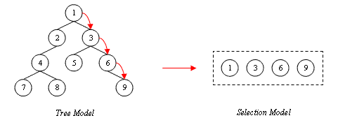

|
||||||||||
| PREV CLASS NEXT CLASS | FRAMES NO FRAMES | |||||||||
| SUMMARY: NESTED | FIELD | CONSTR | METHOD | DETAIL: FIELD | CONSTR | METHOD | |||||||||
public interface SelectionModel<T>
A list model representing a selection in a tree. This model describes all elements
of a tree model that are elements of the selection path. The selection path consists
of elements from the tree model where there is exactly one element of the tree model
for each level in that tree between the start and the end of the selection path. "Level"
is the number of elements needed to reach an element of that level counted from the root.
The selected node, if any exists, is always the last element of the selection path. The
following figure depicts the relationship between a selection model and the associated
tree model:

Only elements obtained from the selection model or its associated model are valid input parameters to the model methods.
| Method Summary | |
|---|---|
T |
getSelectedNode()
Returns the currently selected node in the list model. |
boolean |
isNodeInSelectionPath(T anObject)
Returns whether the given node is part of the selection path. |
boolean |
isNodeSelected(T anObject)
Returns whether the given node is selected. |
| Methods inherited from interface com.ibm.portal.LocatorProvider |
|---|
getLocator |
| Methods inherited from interface com.ibm.portal.ListModel |
|---|
iterator |
| Methods inherited from interface com.ibm.portal.Invalidatable |
|---|
invalidate, invalidate |
| Method Detail |
|---|
boolean isNodeSelected(T anObject)
anObject - the node to check
true if the element is selected,
false otherwiseboolean isNodeInSelectionPath(T anObject)
anObject - the node to check
true if the element is in the selection path
false otherwise.T getSelectedNode()
|
||||||||||
| PREV CLASS NEXT CLASS | FRAMES NO FRAMES | |||||||||
| SUMMARY: NESTED | FIELD | CONSTR | METHOD | DETAIL: FIELD | CONSTR | METHOD | |||||||||